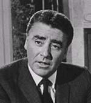
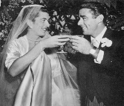

Peter Lawford
1923-1984Actor, born Peter Sidney Lawford, on September 7, 1923 in London, England.
Best known as the husband of Patricia Kennedy, the sister of president John F. Kennedy; and as a member of the "Rat Pack," a group of entertainers that included Lawford, Frank Sinatra, Dean Martin, Sammy Davis, Jr., and Joey Bishop.
Lawford's father was a knighted World War I veteran who became an actor after he retired. Lawford's film debut was at age eight in the British film Poor Old Bill (1931) followed by a role in Lord Jeff (1938). Lawford grew to be a handsome and suave young man, who was being groomed for stardom by MGM in the 1940s. Lawford was the first actor to kiss Elizabeth Taylor on camera, and the last to speak to Marilyn Monroe before she died. Lawford also organized the famous 1962 birthday party for John F. Kennedy in Madison Square Garden where Monroe sang "Happy Birthday" to the President.
Although never considered a very important actor, his films included Mrs. Miniver (1942), The Picture of Dorian Gray (1945), Easter Parade (1948), Little Women (1949), Royal Wedding (1950), It Should Happen to You (1954), Ocean's Eleven (1960), Pepe (1960), Sergeants Three (1962), The Longest Day (1962), Advise and Consent (1962), Harlow (1965), The April Fools (1969) and Body and Soul (1981).
The debonair Lawford enjoyed a reputation as a jet-setting playboy and was a heavy drinker. In 1954 he married Patricia Kennedy, sister of then-Senator John F. Kennedy. The couple had four children, Chris, Sydney, Victoria, and Robin. The two divorced in 1966 after Lawford admitted having affairs. In 1971 he married Mary Rowan, the daughter of comedian Dan Rowan, but the marriage only lasted eight months. In 1975, he married Deborah Gould, and that marriage lasted only two months. In July 1984, he married Patricia Seaton after a nine-year courtship.
Lawford was part of the famous Hollywood "Rat Pack," and performed with the group in Las Vegas and in films, including Ocean's Eleven and Sergeants Three. Lawford and Sinatra had a falling out in 1961 over brother-in-law Robert Kennedy's objections to Sinatra's alleged Mafia connections, and the two men never spoke again.
In 1972, Lawford had surgery to remove a pancreatic tumor. By that time, he was in ill health as a result of long-time alcoholism, and he died on December 24, 1984 of cardiac arrest complicated by kidney and liver failure.